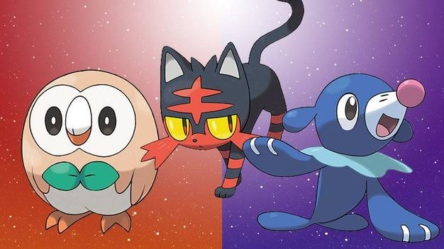
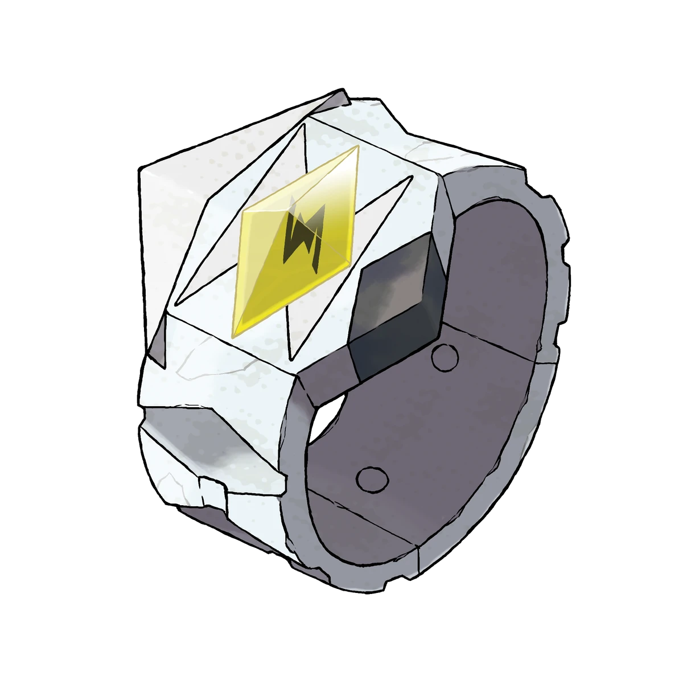
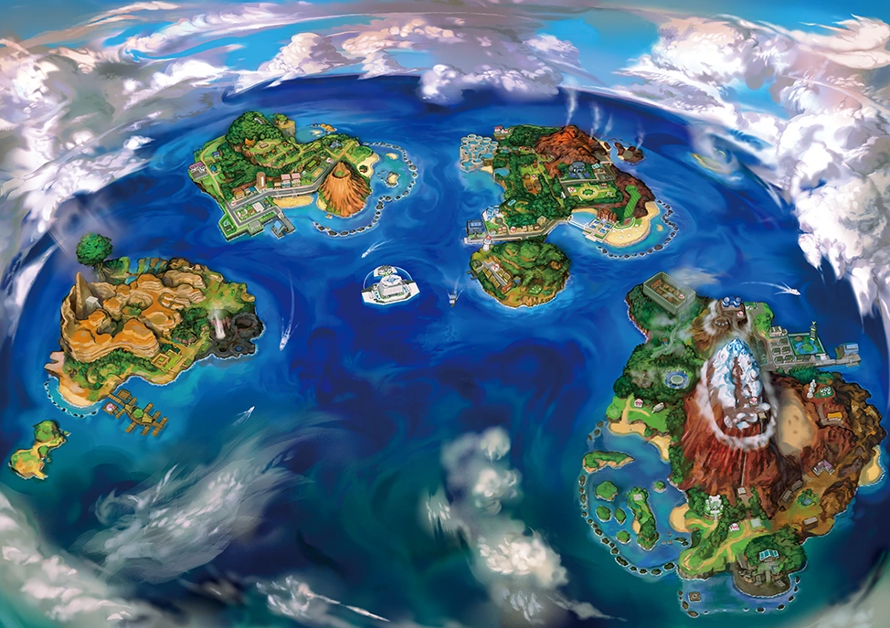

Bem-vindo ao Desafio das Ilhas de Alola
Uma Tradição Diferente de Tudo
Diferente das regiões que possuem ginásios tradicionais, o arquipélago tropical de Alola celebra o Desafio das Ilhas. Nessa jornada cultural, os treinadores precisam superar provas elaboradas pelos Capitães e enfrentar os Pokémon Totem que protegem cada território.
Para ter sucesso, não basta apenas força bruta: é necessário demonstrar sintonia com a natureza e dominar o uso dos cristais Z ao lado de seu parceiro Pokémon.

Etapas para Concluir o Desafio
Todo participante registrado deve cumprir a sequência oficial estabelecida pelos Kahunas das quatro ilhas:
- Receber o amuleto de prova e seu primeiro Pokémon com o Kahuna Hala em Melemele.
- Completar as provas dos Capitães nas ilhas de Melemele, Akala, Ula'ula e Poni.
- Derrotar o Kahuna guardião de cada ilha na Grande Prova oficial.
- Subir o Monte Lanakila para enfrentar a recém-fundada Liga Pokémon de Alola.
Itens Recomendados para a Travessia
- Pulseira Z (Z-Power Ring) para canalizar a energia dos cristais.
- Suprimentos básicos para trilhas e praias:
- Repelente Máximo para atravessar cavernas e matagais.
- Soda Pop e Água Fresca para recuperar energia após as provas.
- Pokébolas variadas, incluindo Dive Balls para espécies aquáticas.
- Rotom Dex atualizada com o mapa marítimo das quatro ilhas.

Inscreva-se na Temporada Tropical
Treinadores a partir de 11 anos de idade já podem solicitar seu credenciamento para a próxima peregrinação pelas ilhas.
Preencher formulário de inscrição no Desafio das Ilhas
